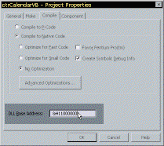

15 Nov 1999
15 Nov 1999
First Posted

Component Base Addresses
Techniques for coding real-world components in VB
Every in-process component has a Base Address associated with it. When an application loads the component, the Win32 DLL routines are invoked. Approximately speaking, the component is placed in a memory location according to its Base Address. If two components have the same base address, a conflict occurs, and time is wasted as all the offsets within the second component are adjusted.
You can make things run quicker if you specify unique base addresses for your components in advance.
Specifying Base Addresses
To specify a new base address for your component, use the Compile tab in the Project Properties dialog. The base address is entered in the DLL Base Address textbox. The default value is &H11000000, but the operating system can accept any value from &H1000000 and &H80000000, in steps of 64k (which is &H10000 - i.e. you leave the last 4 digits at zero).
There are therefore around 32,000 different base addresses to choose from. That's obviously not enough to cover all the components that are ever written in the world, but considering that each application on the system has its own 2Gb address space to work in, 32,000 different components per app should be enough!
Because the operating system doesn't like to have components loaded above 2 gigabytes (the high-end value of &H80000000), the maximum value for the base address is effectively 2 gigabytes minus the size of your component rounded up to the nearest 64K multiple.
Technically Speaking - Does It Really Matter?
Typically the answer to this question will be no for VB coders. But if there's a way to ensure maximum speed it seems a bit silly to ignore it.
Base Addresses are covered in the MSDN Library in an article by Ruediger R. Asche, "Rebasing Win32 DLLs: The Whole Story" (and when he says the whole story he isn't joking!) Whilst the article is long and technical, the aim of it was to find out empirically the performance impact of re-basing a DLL when base addresses clash. His conclusions are that it probably won't have much effect unless there are a large number of addresses that need to be fixed up. His other conclusions are interesting to VB coders though:
- "All other things being equal, the size of the DLL does not matter; that is, the costs for loading a small DLL and a large DLL are pretty much equal. Thus, if possible, you should avoid writing a lot of small DLLs and instead write fewer large DLLs if load time is an issue for you. Note that this observation holds true over a very wide range of DLL sizes. When I ran the test on the huge binary DLL [...] the load time did not differ very much from the load time for the small DLL that contains six pages total."
- "The single biggest factor that slows down the loading of DLLs is the location of the DLL. The documentation for LoadLibrary describes the algorithm that the operating system uses for locating the DLL image; a DLL located at the first search position (the current directory) loads in typically 20 percent or less of the time as the same DLL located deep down in the path loads. It is fairly obvious that the exact load time difference depends a lot on the length of the path, the efficiency of the underlying file system, and the number of files and directories that need to be searched."
- "Rebasing the [test] DLL incurs an overhead of about 600 percent on Windows NT and around 400 percent on Windows 95. Note, however, that this implies a great number of fixups (34,000 in the sample suite). For a typical DLL, the number is much smaller on the average; for example, in the debug version of MFC30D.DLL, which ships with Visual C++ version 2.x, there are about [..] 5 percent of the [..] fixups."
Sleuthing Out a Base Address
If you have an exisiting component that you don't know the base address for, but you'd like yours to be different, what do you do?
Luckily there is a free utility to achieve this, available from the MSDN Library again, called "YAHU", or "Yet Another Header Utility" (one assumes that names of this style were de rigeur back in 1985 when the utility was written). It can be found here at MSDN:
Library
Technical Articles
Windows Platform
Base Services
"YAHU, or Yet Another Header Utility"
On running YAHU.EXE, choose Open and then pick the OCX or DLL you want to find the base address for. YAHU will open three windows full of obscure and probably useless information. The Base Address however, can be found in the "Image Based at:" entry of the top-left hand pane of the PE File Header window.
Another thing you can use YAHU for is to determine which version of VB an OCX or DLL was compiled with (check the Imports section, bottom-left of the PE File Header window. VB4-32 should show VBRUN400.DLL, VB5 will show MSVBVM50.DLL, VB6 will have MSVBVM60.DLL)